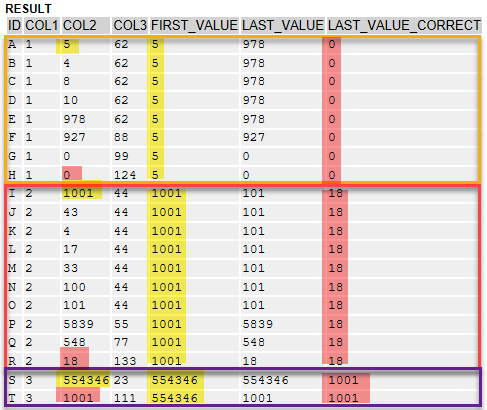

AS ABAP Release 755, ©Copyright 2026 SAP SE. All rights reserved.
ABAP - Keyword Documentation → ABAP - Programming Language → Processing External Data → ABAP Database Access → ABAP SQL → ABAP SQL - Operands and Expressions → ABAP SQL - SQL Expressions sql_exp → sql_exp - sql_win →sql_win - win_func
Syntax
... AVG(
col [AS dtype] )
| MEDIAN( sql_exp )
| MAX( sql_exp )
| MIN( sql_exp )
| SUM( sql_exp )
| STDDEV( sql_exp )
| VAR( sql_exp )
| CORR(
sql_exp1,sql_exp2 )
| CORR_SPEARMAN(
sql_exp,sql_exp2 )
| COUNT( sql_exp )
| COUNT( * )
| COUNT(*)
| ROW_NUMBER( )
| RANK( )
| DENSE_RANK( )
| NTILE( n )
| LEAD|LAG(
sql_exp1[, diff[, sql_exp2]] )
| FIRST_VALUE|LAST_VALUE( col ) ...
Variants:
1. ... AVG( ... ) | ... | COUNT(*)
2. ... ROW_NUMBER( )
3. ... RANK(
)
4. ... DENSE_RANK( )
5. ... NTILE( n )
6. ... LEAD|LAG( sql_exp1[, diff[, sql_exp2]] )
7. ... FIRST_VALUE|LAST_VALUE( col )
Effect
Window function in a window expression. Window functions are:
... AVG( ... ) | ... | COUNT(*)
Effect
Specifies one of the aggregate functions AVG, MEDIAN, MAX, MIN, STDDEV, VAR, CORR, CORR_SPEARMAN, SUM, COUNT, or COUNT(*) as a window function. The aggregate functions evaluate the rows of the current window or of the frame defined by an addition ORDER BY after OVER. The aggregate functions are applied as in the general description, with the following differences:
The same applies to the arguments of aggregate functions as in the general description, with the difference that the argument of an aggregate function in a window expression can itself, as a window function, be an aggregate function. This is the precise case when a grouping is made using the GROUP BY clause in the current query. The windows on the combined result set are then defined and the aggregate expressions allowed as specified columns of the current SELECT list can be used either as standalone expressions or as part of an SQL expression as an argument of window functions of the window expressions there. A window function then determines its result from the aggregated values of the rows of the current window.
Hint
The addition DISTINCT cannot be specified, which means that COUNT( sql_exp ) can only be used to count rows that do not contain a null value, but not rows with different results of sql_exp.
Executable Example
Window Expressions with Grouping
... ROW_NUMBER( )
Effect
Specifies the ranking function ROW_NUMBER as a window function. This ranking function assigns each row a row number of the data type INT8 and does not have an argument. The rows of each window are numbered starting with 1. This numbering takes place in the order in which the rows of a window are processed. The order is either undefined or can be defined by specifying the addition ORDER BY after OVER.
Hint
If ORDER BY is not specified after OVER, ROW_NUMBER still assigns a unique row number, but these numbers are not sorted.
Executable Examples
Examples of Window Expressions
... RANK( )
Effect
Specifies the ranking function RANK as a window function. This ranking function assigns each row a rank of the data type INT8 and does not have an argument. It can only be specified together with ORDER BY after OVER.
The rank of a row is the position of this row in the ranking defined by the addition ORDER BY after OVER and is defined as follows:
Hint
If a window does not contain any multiple rows with respect to the sort criterion, RANK produces the same result as ROW_NUMBER. If any other cases, a ranking determined by RANK is not gap-free. DENSE_RANK can be used to remove gaps.
Executable Example
Window Expressions with Sort
... DENSE_RANK( )
Effect
Specifies the ranking function DENSE_RANK as a window function. This ranking function assigns each row a rank of the data type INT8 and does not have an argument. It can only be specified together with ORDER BY after OVER.
DENSE_RANK works in largely the same way as RANK, but counts without any gaps, starting from the first group, and does not determine the rank using the lowest row number of groups of identical values with respect to the sort criterion.
Hint
If a window does not contain any multiple rows with respect to the sort criterion, DENSE_RANK produces the same result as RANK.
Executable Example
Window Expressions with Sort
... NTILE( n ) OVER( [PARTITION BY sql_exp1]
ORDER BY
col [ASCENDING|DESCENDING]) ...
Effect
Specifies the ranking function NTILE as a window function. This window function divides the rows of a window into n buckets. The goal is to fill all buckets with the same number of rows by following the rule specified after ORDER BY.
If the number of rows of the window m cannot be distributed equally between the number of buckets n, the remainder r is distributed in such a way that the first (m MOD n) buckets each contain one element more. The buckets are numbered starting with the start value 1 and the result of the NTILE function is the number of the bucket a particular row belongs to.
n must be host variable, a host expression, or a literal of type b, s,i, or int8 which represents a positive integer. The OVER-clause including ORDER BY is mandatory.
If n is negative, for literals and host constants, a syntax error occurs. If n is a variable or an expression, instead of a syntax error, a database error and its respective exception CX_SY_OPEN_SQL_DB can occur. The result of the NTILE function is always of type INT8.
Hint
Since the maximum number of rows in a bucket can vary by 1, rows with the same value can also be in different buckets.
Example
Sorting of all employees listed in table DEMO_EMPLOYEES by their salary and distributes them into five salary groups. Group 1 has one entry more, as the number of employees (11) cannot be distributed into five groups of equal size.
SELECT name,
salary,
NTILE( 5 ) OVER( ORDER BY salary ) AS ntile
FROM demo_employees
INTO TABLE @DATA(result).
Executable Example
Window Function NTILE.
... LEAD|LAG( sql_exp1[, diff[, sql_exp2]]
Effect
Specifies the value functions LEAD or LAG as a window function. They can only be specified together with ORDER BY after OVER.
The result of the functions is the value of the SQL expression sql_exp1 for the row of the current window defined by the addition diff or the box defined by the addition ORDER BY after OVER. For diff, a literal or a host constant with the ABAP type b, s, i, int8 can be specified, whose value is a positive number other than 0.
If diff is not specified, the value 1 is used implicitly. In the case of LEAD, this is the row that follows directly and in the case of LAG, the directly preceding row. If the row determined by diff is not in the current window, the result is the null value by default. If the optional SQL expression sql_exp2 is specified, it is evaluated and returned for the current row in cases where the row does not exist.
The result of the functions LEAD and LAG has the following data type:
Hints
Example
SELECT statement with the window functions LEAD and LAG as operands of an arithmetic expression. The addition PARTITION is not specified, which means there is only one window with all rows of the result set. Both LEAD and LAG have only one argument each, which means that the difference between the values of the column NUM1 is calculated using the directly following or preceding row, and any nonexistent rows produce null values. The latter are defined using a null indicator. The program DEMO_SELECT_OVER_LEAD_LAG_DIFF uses this SELECT statement and, when executed, the program displays the result.
SELECT num1 AS number,
num1 - LEAD( num1 ) OVER( ORDER BY id ) AS diff_lead,
num1 - LAG( num1 ) OVER( ORDER BY id ) AS diff_lag
FROM demo_expressions
ORDER BY id
INTO TABLE @DATA(lead_lag_diffs)
INDICATORS NULL STRUCTURE null_ind.
Executable Example
Window Functions LEAD and LAG
... FIRST_VALUE|LAST_VALUE( col )
Effect
Specifies the value functions FIRST_VALUE and LAST_VALUE as a window function. The FIRST_VALUE function returns the first value of a sorted set of values, the LAST_VALUE function returns the last value of a sorted set of values.
If the value is null or if the expression is empty, null is returned (see example, row H).
OVER and ORDER BY are mandatory. PARTITION BY is optional. If a window is divided into partitions, the FIRST_VALUE/ LAST_VALUE function returns a result for each partition (see example). If there's no PARTITON BY clause, the functions work on the entire window.
With the LAST_VALUE function, framing is an important aspect to consider. The default frame is ROWS BETWEEN UNBOUNDED PRECEDING AND CURRENT ROW, so the LAST_VALUE function always returns the value from the current row. To find the last value for a partition or a window, the correct frame has to be specified explicitly: ROWS BETWEEN UNBOUNDED PRECEDING AND UNBOUNDED FOLLOWING.
Example
The program DEMO_SELECT_FIRST_LAST divides the rows from the DEMO_UPDATE table into three partitions, depending on their value in COL1. Within the partitions, the rows are ordered by their value in COL3.
The column FIRST_VALUE returns the first value of COL2 for each partition.
The column LAST_VALUE does not return the last value. As described above, the default frame is from the first row to the current row. If COL3 contains duplicate values, the rows are considered equal and the last value from the group of equals is returned. To get the last value of COL2 of the partition, the frame size has to be specified explicitly, as demonstrated in LAST_VALUE_CORRECT.
In this example, COL3 has multiple duplicate values. The key field - here the field ID - is used to sort rows with the same value.
SELECT
id,
col1,
col2,
col3,
FIRST_VALUE( col2 ) OVER( PARTITION BY col1 ORDER BY col3 )
AS first_value,
LAST_VALUE( col2 ) OVER( PARTITION BY col1 ORDER BY col3 )
AS last_value,
LAST_VALUE( col2 ) OVER( PARTITION BY col1 ORDER BY col3
ROWS BETWEEN UNBOUNDED PRECEDING
AND UNBOUNDED FOLLOWING )
AS last_value_correct
FROM demo_update
INTO TABLE @DATA(result).
cl_demo_output=>display( result ).
